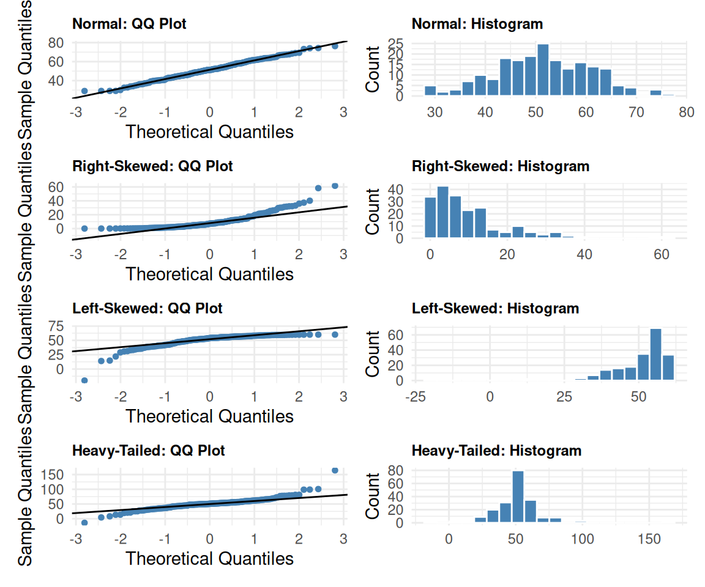

6.2 Inference for Single Means
Key Concepts
- Find the mean and standard error for a distribution of sample means
- Recognize when a \(t\)-distribution is an appropriate model for a distribution of sample means
- Use a \(t\)-distribution, when appropriate, to compute a confidence interval for a population mean
- Use a \(t\)-distribution, when appropriate, to test a hypothesis about a population mean
Distribution of a single mean
For quantitative data, the goal is often to learn about a population average from a sample average. We can use the CLT to conduct inference about sample averages if we have a large enough sample size. If sample size is large enough, the CLT says that the distribution of all sample averages (\(\overline{x}\)) will follow a normal distribution that is centered at the population average (\(\mu\)). In chapter 3, we discussed estimating the standard error of a statistic using a bootstrap distribution. When we use the CLT, we can estimate the standard error for a sample average by
\[ SE(\overline{x}) = \frac{ \sigma }{ \sqrt { n }} \]
where \(\sigma\)is the population standard deviation, and \(n\)is the sample size.
We estimate the standard error of \(\overline{x}\)with \(\frac{s}{\sqrt{n}}\)
For averages, we almost never know the population standard deviation (\(\sigma\)), so we estimate it by using the sample standard deviation (\(s\)). When we use \(s\)instead of \(\sigma\),\(\overline{x}\)no longer follows a normal distribution. Instead,\(\overline{x}\)follows a \(t\)-distribution.
The \(t\)-distribution
The \(t\)-distribution is based on a new parameter called the degrees of freedom (d.f.).
\(t_{n - 1}\)means a \(t\)distribution with\(n - 1\)degrees of freedom
What he found is that provided we have met one of two conditions, then
\[ t = \frac{ \overline{x} - \mu }{ s / \sqrt{n} } \sim t_{n - 1}, \]
or \(t\)follows a \(t\)-distribution with\(n - 1\)degrees of freedom. There are two possible ways you can justify using the \(t\)-distribution for averages.
To use the \(t\)-distribution, you need either
-\(n \ge 30\)or - a population that is approximately normal
- For a large enough sample size (\(n \ge 30\)), you can use the \(t\)-distribution
- If\(n < 30\), then the \(t\)-distribution is only a good approximation if the population is approximately normal.
Class Example 6.2.1: Describe the sampling distribution
For each of the following questions, identify whether or not a \(t\)-distribution would be appropriate. If so, identify the number of degrees of freedom that you would use for the \(t\)-distribution.
- Samples of size\(n = 10\), from a population that is approximately normal.
- Samples of size\(n = 15\), from a population that is heavily skewed to the right.
- Samples of size\(n = 50\), from a population that is heavily skewed to the left.
As\(n \rightarrow \infty\), the \(t\)-distribution becomes closer and closer to the standard normal distribution.
CI for a single mean
We can only use the \(t\)-distribution for confidence intervals if
-\(n \ge 30\)or - the population is approximately normal
Provided that the sample size is large enough (\(n \ge 30\)) or the population is approximately normal, a confidence interval for a population average \(\mu\)can be constructed using
\[ \overline{x} \pm t^* \frac{ s }{ \sqrt{ n }} \]
where \(\overline{x}\)is the sample average and\(t^*\)is the appropriate confidence multiplier from a\(t_{n-1}\)distribution.
Finding\(t^*\)
To find the appropriate\(t^*\)for the confidence interval for a population average, we need to use technology to find the corresponding endpoints for the confidence interval.
Class Example 6.2.2: Doggo Heart Rates
The article “Changes in Pulse Rate, Respiratory Rate and Rectal Temperature in Working Dogs before and after Three Different Field Trials” (Animals (Basel), 2020) documents the physiological conditions of nine Search-and-Rescue (SAR) dogs. The pulse rate (beats/min) for each dog was recorded immediately after a simulated search. They found a sample mean and standard deviation of 167.42 and 41.40, respectively.
- What is the variable in this study? Is it categorical or quantitative?
- Assuming that the distribution of pulse rates is (approximately) normal, what is the 99% confidence interval for the mean pulse rate of SAR dogs during a search? (use\(t^* = 3.355\))?
- Provide an interpretation for your interval in b).
- If we had calculated a 90% confidence interval instead of a 99% confidence interval, would it have been larger or smaller than the 99% confidence interval? Explain.
Class Example 6.2.3: Dinosaur Diets
A recent study on the digestibility of Jurassic plants (Howell et al., 2023) found that in four samples of Equisetum hyemale (a fern), the digestibility (measured in milliliters of gas per 200 milligrams of plant dry matter) had a sample mean and standard deviation of 58.33 and 3.45, respectively.
- What is the variable in this study? Is it categorical or quantitative?
- How many degrees of freedom are there?
- Assuming that the digestibility of pieces from this fern is (approximately) normal, What is the 98% confidence interval estimate for the average digestibility?
- Provide an interpretation for your interval in c).
- Is it plausible to suggest that average digestibility is the same as Marattia attenuata (another fern) which has a digestibility of 9.52?
Class Example 6.2.4: Taylor Swift!
Taylor Swift’s The Eras tour took the country (and world) by storm in 2023 and 2024. From a survey of 596 attendees, the average expenses for travel, tickets, costumes, etc. was $1,327.74. Suppose the standard deviation was approximately $500.
- What is the variable in this study? Is it categorical or quantitative?
- What is the 95% confidence interval estimate for the mean expenditure per attendee?
- Given an interpretation of your interval in b).
- Using the average attendance at a Swift concert of 75,000 people, estimate the average amount spent by all attendees at a single concert.
- Assuming the average sales tax rate is approximately 6%, estimate the tax revenue generated from a single Swift concert.
Hypothesis test for a single mean
Remember,\(t_{n - 1}\)means a \(t\)distribution with\(n - 1\)degrees of freedom
Provided that the sample size is large enough (\(n \ge 30\)) or the population is approximately normal, then according to the CLT
\[ t = \frac{ \overline{x} - \mu }{ s / \sqrt{n}} \sim t_{n - 1}. \]
We can use this fact to conduct a hypothesis test. As with the hypothesis test we have discussed thus far, there are a specific set of steps to conduct a hypothesis test using the CLT.
Step 1: Check conditions for the test
We can only use the \(t\)-distribution for confidence intervals if
-\(n \ge 30\)or - the population is approximately normal.
Check whether either\(n \ge 30\)or the population is approximately normal.
Step 2: State the hypotheses
For a single average, the null hypothesis always has the form
\[ H_0: \mu = \mu_0 \]
where \(\mu_0\)is a number that represents the averages claimed or status quo value. The alternative hypothesis has one of the following three forms:
\[ \begin{aligned} H_a: &\mu < \mu_0\\ H_a: &\mu > \mu_0\\ H_a: &\mu \neq \mu_0 \end{aligned} \]
Step 3: Calculate the test statistic
To conduct the hypothesis test using the CLT, we use a standardized test statistic of
\[ t = \frac{ \overline{x} - \mu_0 }{s / \sqrt{n}} \]
which follows a\(t_{n-1}\)distribution.
Step 4: Find the \(p\)-value
To find the \(p\)-value, you must use technology to find what proportion of the \(t\)-distribution is more extreme than the test statistic (in the direction of the alternative hypothesis). If your alternative is two-sided, then you multiply the one-sided \(p\)-value by 2.
Step 5: State your decision and interpret in the context of the hypotheses
As with the randomization hypothesis test, you make your decision based upon the \(p\)-value from step 3.
- If \(p\)-value\(< \alpha\)
- Decision: reject\(H_0\),
- Interpretation: We have significant evidence to suggest that the alternative hypothesis is correct.
- If \(p\)-value \(\ge \alpha\)
- Decision: fail to reject\(H_0\)
- Interpretation: We do not have significant evidence to suggest that the alternative hypothesis is correct.
You should always write your interpretation in the context of the original hypothesis.
How to draw a sketch to illustrate the \(p\)-value
Class Example 6.2.5: Food Deserts
Food Deserts are geographical areas that have limited access to affordable and nutritious foods. An analysis of accessibility of grocery stores in the City of Vancouver was published in 2022. Using a sample\(n = 4,041\)city blocks, they found the average number of grocery stores within a 15-minute walk was 3.8, with a standard deviation of 3.2. Suppose the city claims that, on average, a resident has access to two grocery stores within a 15-minute walk. Conduct a hypothesis test (using \(\alpha=0.05\)) to test the city’s claim.
- Define the relevant parameter(s) and state the null and alternative hypotheses. Be sure to check any relevant conditions.
- What is the test statistic.
- Find the \(p\)-value and give a sketch to illustrate your \(p\)-value.
- State your decision and interpret your findings in the context of the study.
Class Example 6.2.6: First-time home buyers
In 2022, the National Association of Realtors reported that from a sample of 1,262 first-time home buyers, the average age was 36, and suppose the standard deviation was 4.2 years. Conduct a hypothesis test (using \(\alpha = 0.05\)) to test whether or not the average age of first-time home buyers was different than 2021, where the average age was 33.
- Define the relevant parameter(s) and state the null and alternative hypotheses. Be sure to check any relevant conditions.
- What is the test statistic.
- Find the \(p\)-value and give a sketch to illustrate your \(p\)-value.
- State your decision and interpret your findings in the context of the study.
Class Example 6.2.7: Ski Patrol: Avalanches
Snow avalanches can be a real problem for travelers in the western United States and Canada. A very common type of avalanche is called the slab avalanche. These have been studied extensively by David McClung, a professor of civil engineering at the University of British Columbia. Slab avalanches studied in Canada had an average thickness of 67 (in cm) (Avalanche Handbook, by David McClung and P. Schaerer.) The ski patrol at Vail, Colorado, is studying slab avalanches in their region. A random sample of avalanches in spring gave the following thicknesses (in cm).
| 59 | 51 | 76 | 38 | 65 | 54 | 49 | 62 | 68 | 55 | 64 | 67 | 63 | 74 | 65 | 79 |
|---|
Assuming that slab thickness has an approximately normal distribution, is there evidence that the slab thickness in the Vail region differs from that in Canada? You may either us a 95% confidence interval or a hypothesis test (use \(\alpha = 0.05\)) to support your conclusion.
Assessing model conditions
The \(t\)-test is robust to lack of normality, but we still need to see if normality is a reasonable assumption.
In the examples above, we’ve either assumed that the population values were normally distributed or had large enough sample sizes to assume normality. These assumptions aren’t always apparent (or known) in research studies. It is important to investigate whether normality is reasonable before performing a statistical test. The \(t\)-test is robust to lack of normality, so when we check this condition we are looking for clear evidence that the distribution is non-normal. If normality is reasonable, we can proceed with a \(t\)-test.
Create a histogram/dot plot or a QQ plot to assess the normality condition for a \(t\)-test.
There are two primary ways that we can check for normality: histograms/dot plots or quantile-quantile plots. For histograms/dot plots, simply create a histogram/dot plot of the sample data and determine whether normality is reasonable (if the sample data is approximately normal, then normality is reasonable). Quantile-quantile plots, or QQ plots, are commonly seen when using statistical software (such as SPSS). They are created by first ordering the sample data from smallest to largest then comparing these ordered sample data to percentiles of the normal distribution. This information is plotted on an x-y graph (scatterplot) as points. If the resulting graph follows a straight line (that goes through the origin), we can say that the normality assumption is reasonable. The figure below provides some examples of QQ plots and their corresponding histograms.